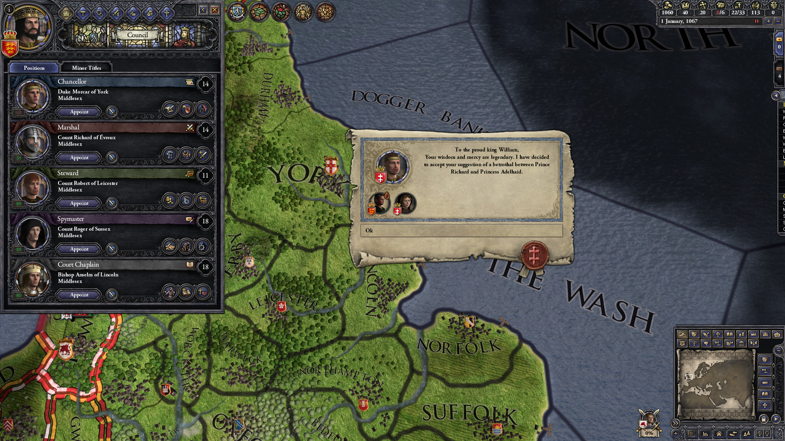

Последняя игра в моём списке относится к жанру глобальных стратегий: Crusader Kings II, как и Europa Universalis IV, выпущена компанией Paradox (Моя любимая игра етой компании Hearts of Iron 4), и предлагает игрокам погрузиться в мир завоеваний, интриг, восхождений и падений великих династий.

За основную игру вы заплатите 599 рублей. Чтобы обзавестись всеми тремя десятками дополнений, придется выложить еще 6,6 тыс. рублей. Отметим, что разработчики до сих пор поддерживают Crusader Kings II патчами, несмотря на то что эта стратегия вышла в далеком 2012 году – пример горячей, хоть и не бескорыстной любви к своему детищу.